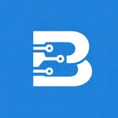

R$ 197/mês
Indicado para usuários que precisam de suporte básico e manutenção simples
R$ 347/mês
Indicado para quem usa o computador no dia a dia e precisa de desempenho estável e suporte confiável.
R$ 597/mês
Indicado para empresas que precisam de suporte técnico recorrente e estabilidade nos sistemas
R$ 897/mês
Indicado para empresas que precisam de suporte completo, contínuo e prioridade máxima para evitar qualquer parada operacional
Profissionais certificados e experientes em TI.
Respostas em até 24h e suporte prioritário.
Proteção completa contra ameaças digitais.
Melhorias constantes para máxima eficiência.
Diagnóstico e resolução de problemas via acesso remoto, sem necessidade de visita presencial.
Garantimos resposta dentro do prazo estipulado em cada plano, com prioridade para emergências.
Sim, sem multas, com aviso prévio de 30 dias.
Computadores, notebooks, servidores e dispositivos móveis, com foco em Windows, Linux e Mac.
Somos especialistas em infraestrutura e suporte de TI, oferecendo soluções personalizadas para empresas de todos os portes. Com anos de experiência, garantimos a continuidade e segurança dos seus negócios.